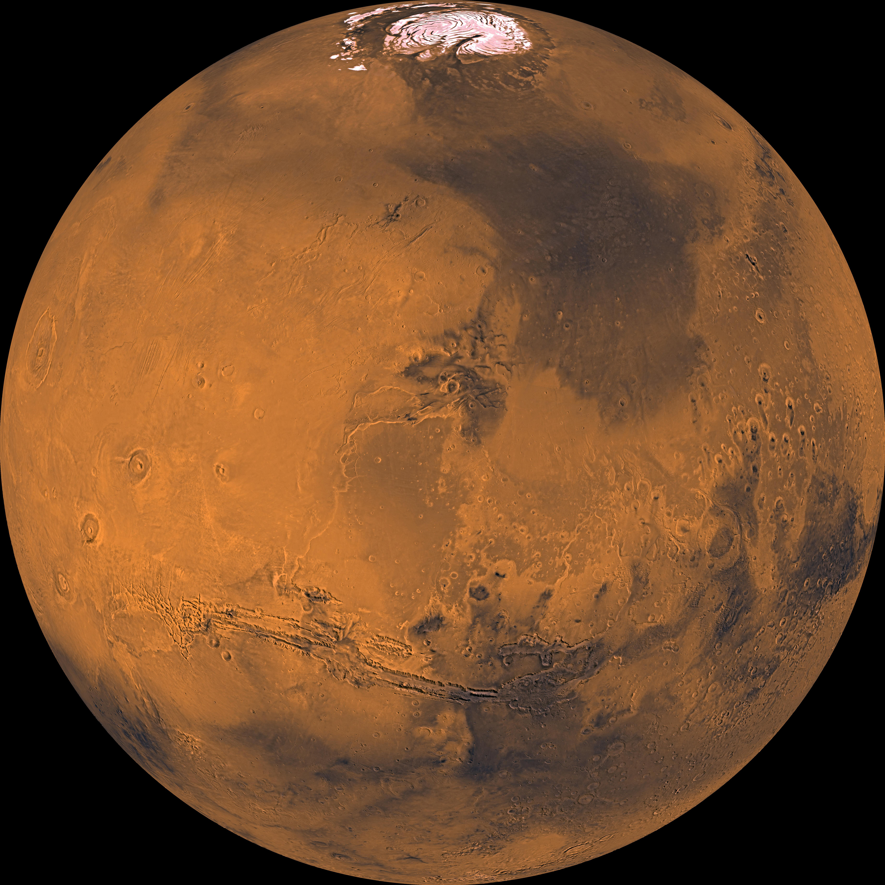
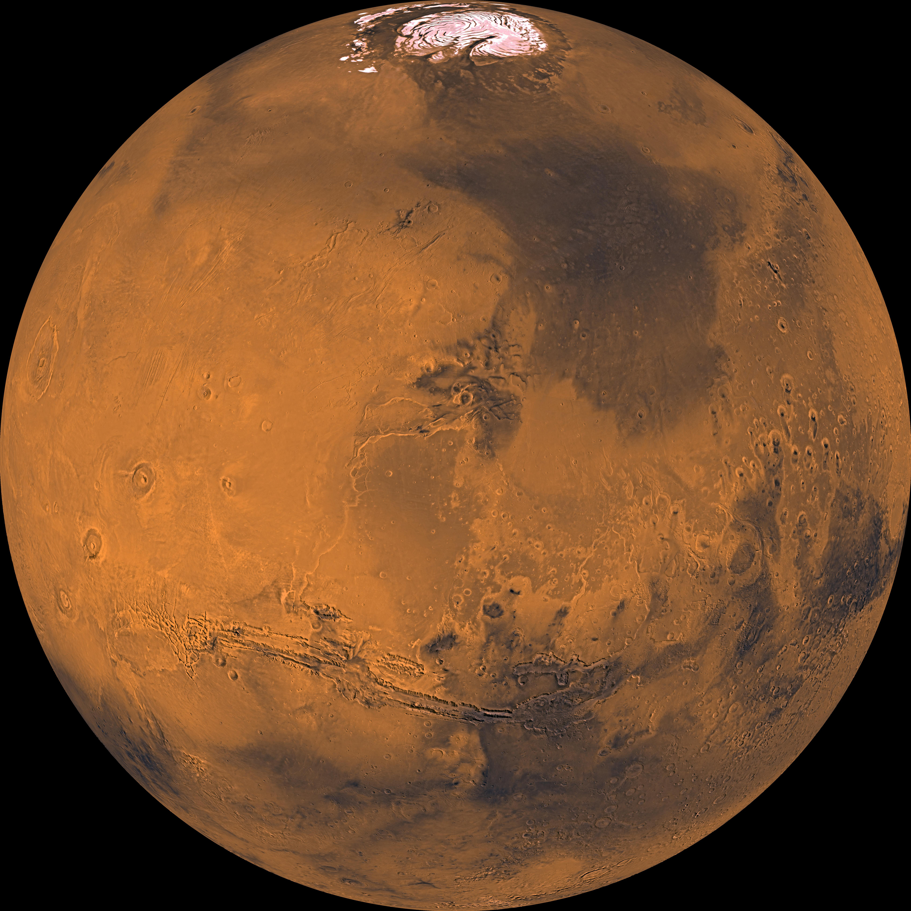
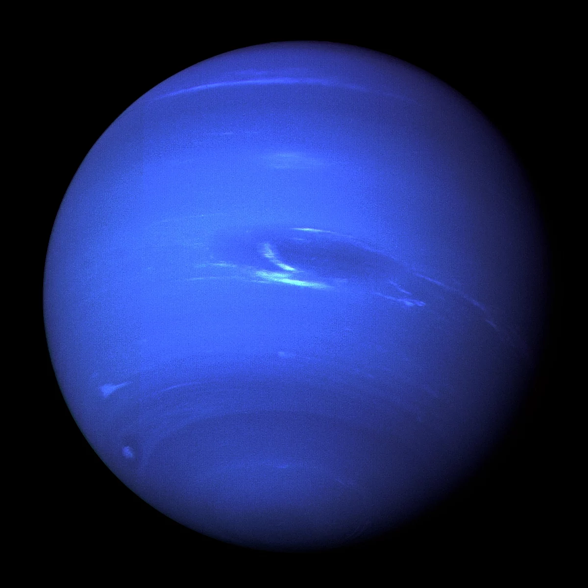
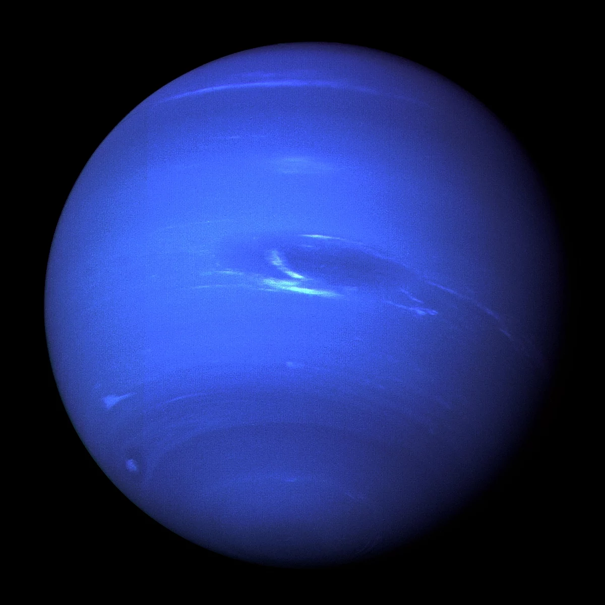
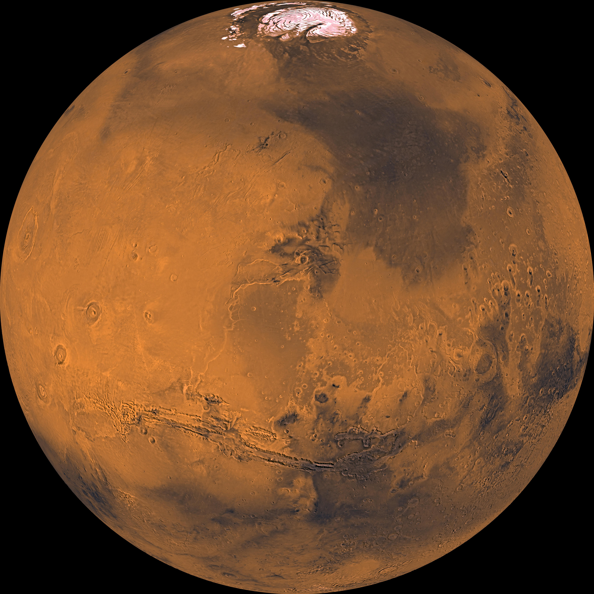
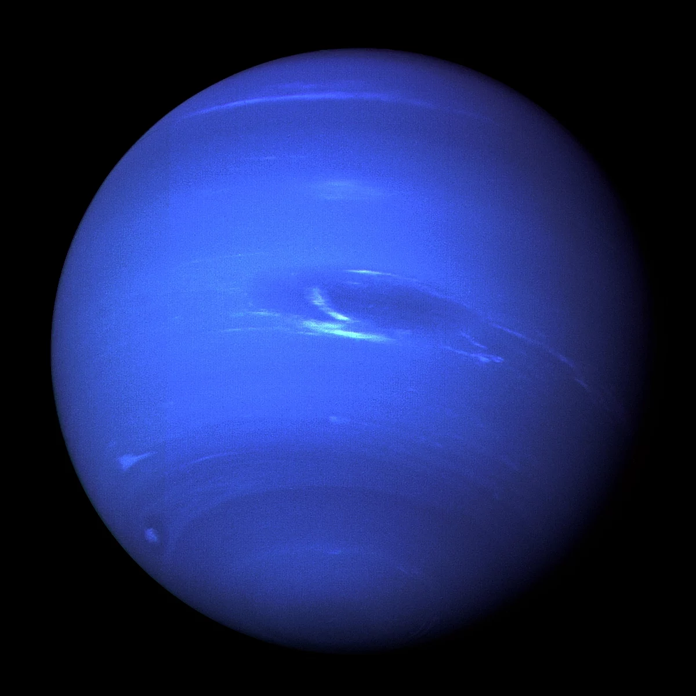

 

| Venus | Mars | Saturn | Neptune | |
|---|---|---|---|---|
| Mass (kg) | 4.87 x 1024 | 6.42 x 1023 | 5.69 x 1026 | 1.02 X 1026 |
| Diameter (km) | 12,104 | 6,787 | 120,660 | 49,528 |
| Mean Density (kg/m3) | 5,250 | 3,940 | 690 | 1,640 |
| Escape Velocity (m/s) | 10,400 | 5,000 | 35,600 | 23,300 |
| Average Distance from Sun | 0.723 AU (108,208,930 km) | 1.524 AU (227,936,640 km) | 9.537 AU (1,426,725,400 km) | 30.07 AU (4,498,252,900 km) |
| Rotation Period (length or day in Earth days) | 243.02 | 1.026 | 0.44 (10.2 Earth Hours) | 0.67 (19.1 hours) |
| Revolution Period (length of year in Earth days) | 224.7 | 686.98 | 29.46 | 60,190 (164.8 Earth years) |

